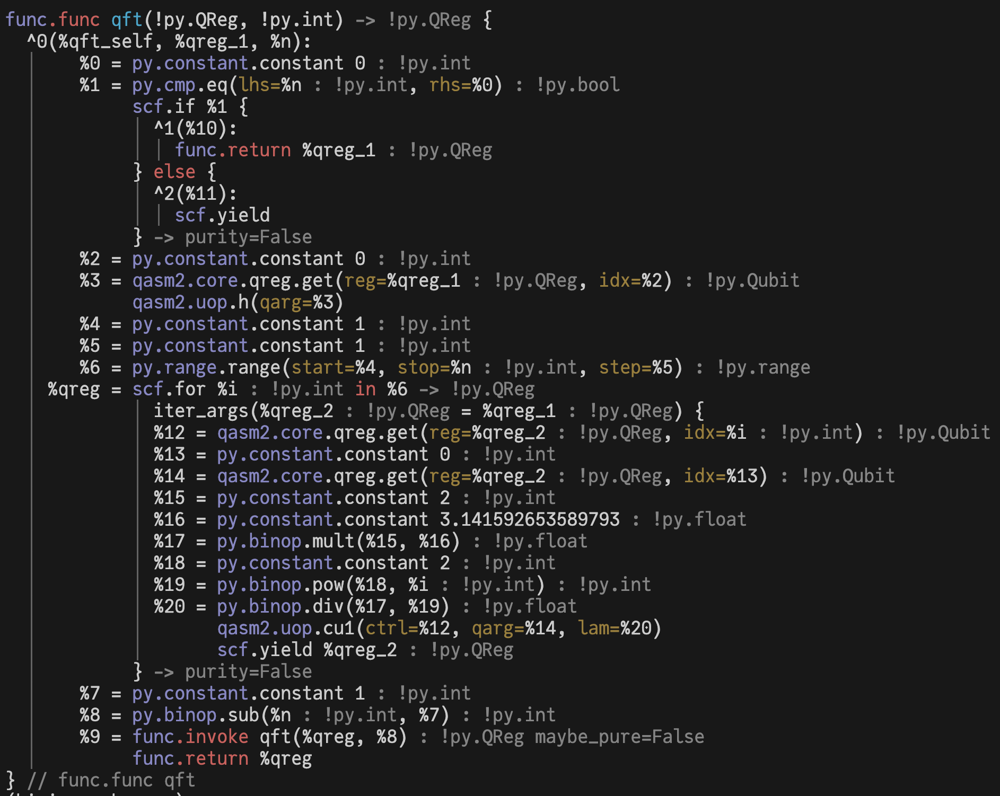
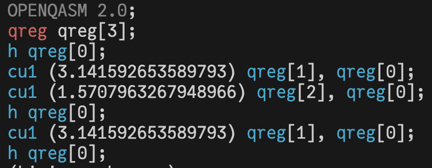

Digital Quantum Computing with circuits
This section provides the quick start guide for developing quantum programs represented by circuits using Bloqade. Circuits are a general-purpose and powerful way of representing arbitrary computations. For a few examples please refer to our examples.
Open Quantum Assembly Language (QASM2) and beyond
We have chosen to closely mirror the semantics of the Open Quantum Assembly Language (QASM2) in bloqade.circuits. The QASM2 dialect is a simple quantum assembly language that allows you to write quantum circuits in a human-readable format. However, one should note that QASM2 is a very restricted language and does not support all the features of a high-level language.
For example, there is a separation of gate routines declared with gate and main program written as a sequence of gate applications. While the gate routine is similar to a function in many ways, it does not support high-level features such as recursion (due to lack of if statement support inside) or control flows.
Indeed, bloqade.circuits is designed with the notion of kernels in mind by decorating functions with a @qasm2.extended decorator. The python code is interpreted and parsed by the Kirin compiler toolchain and lowered to an abstract representation of the program. These kernels can include classical computation and the usual programming structures-- if/else, for and while loops, function inputs, and the like, as one is used to in Python.
Additionally, the QASM2 representations of bloqade.circuits have been extended to include a key advantage of reconfigurable neutral atom hardware: parallelism. For example, one can represent a CZ gate applied to many qubit pairs at once as
@qasm2.extended
def parallel_cz(controls:ilist[qasm2.Qubit],targets:ilist[qasm2.Qubit]):
for ctr in range(len(controls)):
qasm2.cz(ctrl=controls[0],qarg=controls[1])
@qasm2.extended
def simd_cz(controls:ilist[qasm2.Qubit],targets:ilist[qasm2.Qubit]):
qasm2.parallel.cz(ctrls=controls,qargs=targets)
While in our initial release we support QASM2 as the first eDSL, we plan to use it as a compilation target instead of a programming language for long-term development. We are working on a more expressive language that will be more suitable for quantum programming in the error-corrected era.
Quick Example
You can program kernels and quantum programs using the qasm2.extended decorator, such as the following Quantum Fourier Transform (QFT) circuit:
import math
from bloqade import qasm2
@qasm2.extended
def qft(qreg: qasm2.QReg, n: int):
if n == 0:
return qreg
qasm2.h(qreg[0])
for i in range(1, n):
qasm2.cu1(qreg[i], qreg[0], 2 * math.pi / 2**i)
qft(qreg, n - 1)
return qreg
While the syntax is similar to Python, the qasm2.extended decorator actually compiles the qft function
into lower-level intermediate representation (IR) code that can be later interpreted, analyzed, or executed on quantum hardware. Observe that this function cannot immediately compile down to QASM as it takes parametrized inputs, and is called recursively.
You can inspect the initial IR code by calling the pretty printer:
qft.print()

And emit QASM2 code
from bloqade.qasm2.emit import QASM2 # the QASM2 target
from bloqade.qasm2.parse import pprint # the QASM2 pretty printer
target = QASM2()
ast = target.emit(main)
pprint(ast)

Understanding the compilation process
The compilation process is divided into several stages:
- Lowering: the decorator
qasm2.extendedtakes the Python Abstract Syntax Tree (AST) and lowers it into Kirin IR in the Static Single Assignment (SSA) form. - Interpretation: when invoking the PyQrack backend, the IR code is interpreted via Kirin's IR interpreter (missing link) with the PyQrack runtime backend.
- Target code generation: when emitting QASM2 code:
- The IR code gets aggressively inlined and all constant expressions are evaluated.
- All loops and control flow are unrolled.
- All compatible Python expressions (e.g
sin, arithmetics) are translated into QASM2 expression. - The QASM2 code is emitted as QASM2 AST for pretty printing.
Progressive compilation
As well as writing circuit executions, you can also progressively transform and compile that circuit. For example, you may want to lower arbitrary single qubit unitaries into hardware-specific unitaries, as is done in this example. For more details on the kinds of circuit-level compiler passes and how to write your own, see here
Dialect groups
Bloqade provides a set of dialects (missing link) for QASM2 and our custom extensions to model parallel gates in neutral atom architectures. The basic QASM2 functionality can be enabled via
pip install bloqade[qasm2]
Extended QASM
The decorator qasm2.extended is a group of smaller dialects:
extended = structural_no_opt.union(
[
inline,
uop,
glob,
noise,
parallel,
core,
]
)
where structural_no_opt is the base dialect group that provides the basic control flow, common Python expressions (but not all), then:
coreprovides the core QASM2 operations such as register allocation, measurement and reset.uopprovides the unary operations, such as standard Pauli gates, rotation gates, etc.
The following dialects are specific to neutral atom quantum computing as an extension:
globprovides the global gates (Rydberg specific)noiseprovides the noise channelsparallelprovides the parallel gate support (Rydberg specific).inlinedialect provides the inline QASM string
Strict QASM2 mode
While the qasm2.extended decorator provides a lot of high-level features as an extension of QASM2, you may want to program in strict QASM2 mode for compatibility reasons. You can do this by using the qasm2.main and qasm2.gate decorators:
@qasm2.main
def main():
qasm2.h(0)
qasm2.cx(0, 1)
qasm2.measure(0)
qasm2.measure(1)
return qasm2.qreg(2)
which corresponding to the following QASM2 code:
OPENQASM 2.0;
include "qelib1.inc";
qreg q[2];
creg c[2];
h q[0];
cx q[0], q[1];
measure q[0] -> c[0];
measure q[1] -> c[1];
Note that the return values are all ignored due to lack of equivalent in QASM2.